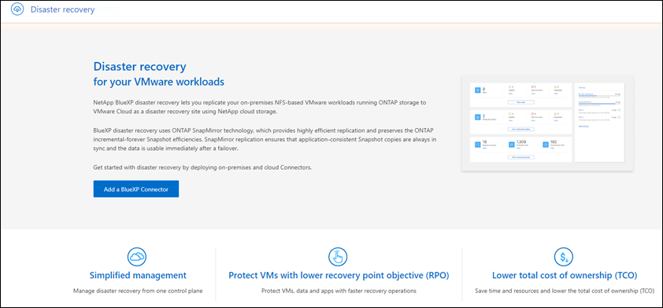

Notas de la versión
Notas de la versión
Configura las licencias para la recuperación ante desastres de BlueXP
 Sugerir cambios
Sugerir cambios
Con la recuperación ante desastres de BlueXP, puedes utilizar el servicio en una prueba gratuita o traer tu propia licencia.
Puede utilizar los siguientes tipos de licencia:
-
Regístrate para una prueba gratuita de 90 días.
-
BYOL (BYOL), que es un Archivo de licencia de NetApp (NLF) que obtiene del representante de ventas de NetApp Puede utilizar el número de serie de la licencia para activar la licencia de licencia en la cartera digital de BlueXP.

|
Los cargos de recuperación de desastres de BlueXP se basan en la capacidad aprovisionada de los almacenes de datos en el sitio de origen cuando hay al menos una máquina virtual con un plan de replicación. La capacidad para un almacén de datos con fallos no se incluye en la permisión de capacidad. Para una BYOL, si los datos superan la capacidad permitida, las operaciones en el servicio estarán limitadas hasta que obtenga una licencia de capacidad adicional o actualice la licencia en la cartera digital de BlueXP. |
Después de configurar tu BYOL, puedes ver la licencia en la pestaña Licencias de servicios de datos de la cartera digital de BlueXP.
Después de que finalice la prueba gratuita o la licencia caduque, puede seguir haciendo lo siguiente en el servicio:
-
Ver cualquier recurso, como una carga de trabajo o un plan de replicación.
-
Elimine cualquier recurso, como una carga de trabajo o un plan de replicación.
-
Ejecute todas las operaciones programadas que se crearon durante el período de prueba o bajo la licencia.
Pruébalo con una prueba gratuita de 90 días
Puedes probar la recuperación de desastres de BlueXP utilizando una prueba gratuita de 90 días.
|
|
No se aplican límites de capacidad durante la prueba. |
Puede obtener una licencia en cualquier momento y no se le cobrará hasta que finalice la prueba de 90 días. Para continuar después de la prueba de 90 días, deberá comprar una licencia BYOL.
Durante la prueba, tiene plena funcionalidad.
-
Acceda a "Consola BlueXP".
-
Inicie sesión en BlueXP.
-
En el menú de navegación izquierdo de BlueXP, selecciona Protección > Recuperación ante desastres.
Si es la primera vez que inicia sesión en este servicio, aparecerá la página de destino.

-
Si aún no ha agregado un conector para otros servicios, agregue uno.
Para agregar un conector, consulte "Más información sobre conectores".
-
Después de configurar un conector, en la página de destino de la recuperación de desastres de BlueXP, el botón para añadir un conector cambia a un botón para iniciar una prueba gratuita. Seleccione Iniciar prueba gratuita.
-
Revise la información de prueba gratuita y seleccione Vamos.
Cuando finalice la prueba, adquiera una licencia BYOL a través de NetApp
Cuando finalice la prueba, puede comprar una licencia a través de su representante de ventas de NetApp
-
Póngase en contacto con su representante de ventas de NetApp para adquirir una licencia.
-
Después de obtener la licencia, vuelve a la recuperación de desastres de BlueXP. Seleccione la opción Ver métodos de pago en la parte superior derecha. O, en el mensaje de que la prueba gratuita está caducando, seleccione Suscribirse o comprar una licencia.

-
Selecciona Añadir licencia a BlueXP. Se te dirigirá a la cartera digital de BlueXP.

-
En la cartera digital de BlueXP, en la pestaña Licencias de servicios de datos, selecciona Añadir licencia.
-
En la página Add License, escriba el número de serie y la información de la cuenta del sitio de soporte de NetApp.

-
Seleccione Agregar licencia.
Finalice la prueba gratuita
Puede detener la prueba gratuita en cualquier momento o puede esperar hasta que caduque.
-
En la recuperación ante desastres de BlueXP, en la parte superior derecha, selecciona Prueba gratuita - Ver detalles.
-
En los detalles del menú desplegable, seleccione END FREE TRIAL.

-
Si desea eliminar todos los datos, marque Borrar todos los datos cuando termine mi prueba.
Esto eliminará todos los programas, planes de replicación, grupos de recursos, vCenter y sitios. Los datos de auditoría, los registros de operaciones y el historial de trabajos se conservan hasta el final de la vida útil del producto.
Si finaliza la prueba gratuita y no se le pide que elimine datos y no adquiere ninguna licencia o suscripción, 60 días después de que finalice la prueba gratuita, la recuperación ante desastres de BlueXP eliminará todos sus datos. -
Escriba «End trial» en el cuadro de texto.
-
Seleccione END.
Con su propia licencia (BYOL)
Si trae su propia licencia (BYOL), el equipo incluye la compra de la licencia, la obtención del archivo de licencia de NetApp (NLF) y la adición de la licencia a la cartera digital de BlueXP.
Compra una licencia de recuperación ante desastres de BlueXP
Si no tienes una licencia de recuperación ante desastres de BlueXP, ponte en contacto con nosotros para comprar una.
-
Debe realizar una de las siguientes acciones:
-
Póngase en contacto con el departamento de ventas de NetApp para adquirir una licencia.
-
Haga clic en el icono de chat situado en la parte inferior derecha de BlueXP para solicitar una licencia.
-
Obtén el archivo de licencia de recuperación ante desastres de BlueXP
Después de comprar tu licencia de recuperación ante desastres de BlueXP al representante de ventas de NetApp, activas la licencia introduciendo el número de serie de recuperación de desastres de BlueXP y la información de la cuenta del sitio de soporte de NetApp (NSS).
Antes de comenzar, necesitará tener la siguiente información:
-
Número de serie de la recuperación ante desastres de BlueXP
Busque este número en su pedido de ventas o póngase en contacto con el equipo de cuentas para obtener esta información.
-
ID de cuenta de BlueXP
Puedes encontrar tu ID de cuenta de BlueXP seleccionando el menú desplegable Cuenta en la parte superior de BlueXP y, a continuación, seleccionando Gestionar cuenta junto a tu cuenta. Su ID de cuenta se encuentra en la ficha Descripción general. Para el sitio de modo privado sin acceso a Internet, utilice CUENTA-DARKSITE1.
Añade la licencia de recuperación ante desastres de BlueXP a la cartera digital de BlueXP
Después de comprar una licencia de recuperación ante desastres de BlueXP para tu cuenta de BlueXP, tendrás que añadir la licencia a la cartera digital de BlueXP.
-
En el menú de BlueXP, selecciona Gobernanza > Cartera digital > Licencias de servicios de datos.
-
Seleccione Agregar licencia.
-
En la página Agregar licencia, ingrese la información de la licencia y seleccione Agregar licencia:
-
Si tienes el número de serie de la licencia de BlueXP y conoces tu cuenta NSS, selecciona la opción Enter Serial Number e introduce esa información.
Si su cuenta del sitio de soporte de NetApp no está disponible en la lista desplegable, "Agregue la cuenta NSS a BlueXP".
-
Si tienes el archivo de licencia de BlueXP (necesario cuando se instala en un sitio oscuro), selecciona la opción Cargar archivo de licencia y sigue las indicaciones para adjuntar el archivo.
-
La cartera digital de BlueXP ahora muestra la recuperación ante desastres con una licencia.

Actualiza tu licencia de BlueXP cuando caduque
Si el plazo que tienes con la licencia se acerca a la fecha de caducidad o si la capacidad que tienes con la licencia está llegando al límite, se te notificará en la IU de recuperación ante desastres de BlueXP. Puedes actualizar tu licencia de recuperación ante desastres de BlueXP antes de que caduque para que no se interrumpa tu capacidad de acceder a los datos escaneados.

|
Este mensaje también aparece en la cartera digital de BlueXP y en la "Notificaciones". |
-
Selecciona el icono de chat en la parte inferior derecha de BlueXP para solicitar una extensión de tu término o capacidad adicional a tu licencia para el número de serie concreto. También puede enviar un correo electrónico para solicitar una actualización de su licencia.
Después de pagar la licencia y estar registrado en el sitio de soporte de NetApp, BlueXP actualiza automáticamente la licencia en la cartera digital de BlueXP y la página de licencias de servicios de datos reflejará el cambio que se ha producido en un plazo de 5 a 10 minutos.
-
Si BlueXP no puede actualizar automáticamente la licencia (por ejemplo, cuando está instalada en un sitio oscuro), deberá cargar manualmente el archivo de licencia.
-
Puede obtener el archivo de licencia en el sitio de soporte de NetApp.
-
Accede a la cartera digital de BlueXP.
-
Seleccione la pestaña Licencias de servicios de datos, seleccione el icono Acciones … para el número de serie del servicio que está actualizando y seleccione Actualizar licencia.
-